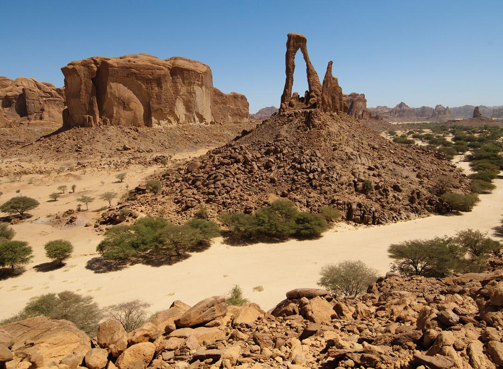
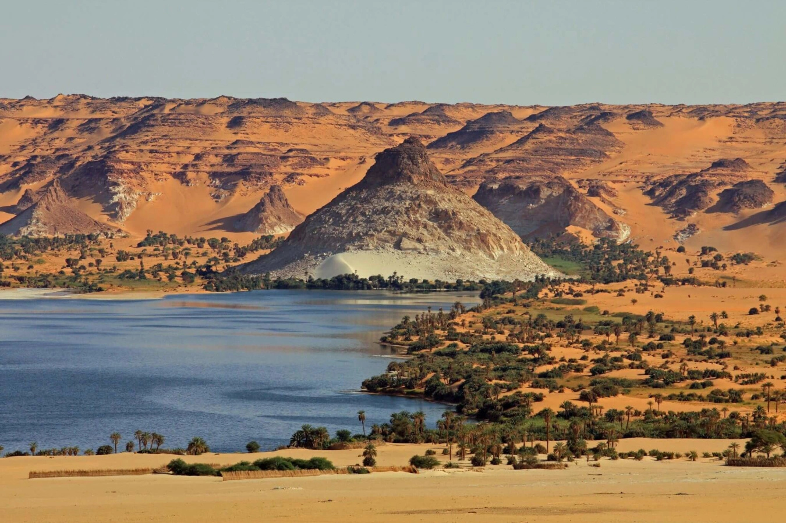
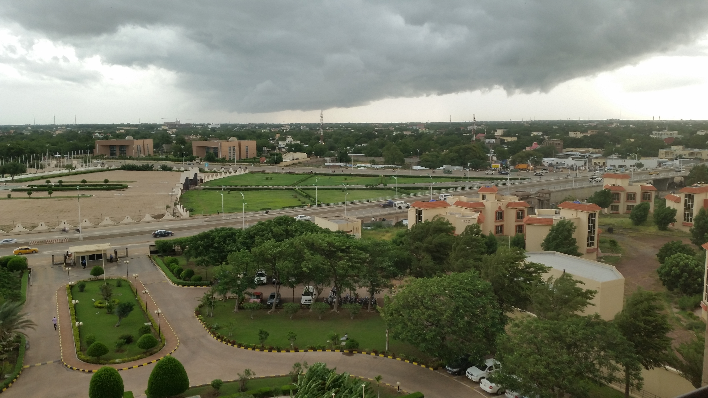

Ennedi Desert (Chad) is a UNESCO site known for its rock formations and ancient rock art — a stunning mix of nature and history in the Sahara. It's one of the most beautiful and remote landscapes in Africa. It's a breathtaking and remote part of the Sahara with deep cultural and natural value.

The Ounianga Kébir Lakes A Hidden Treasure in Chad's Desert:
Located in the heart of the Sahara Desert in northern Chad,
the Ounianga Lakes are a group of around 50 permanent
lakes sustained by ancient underground water sources

N'Djamena, the capital and largest city of Chad, is a vibrant
metropolis that serves as the country's political, economic,
and cultural hub. Situated on the banks of the Chari River,
N'Djamena offers a unique blend of traditional and modern
influences, making it a fascinating destination for visitors.